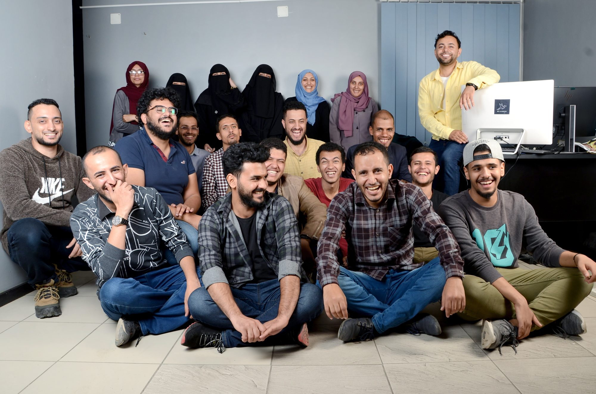
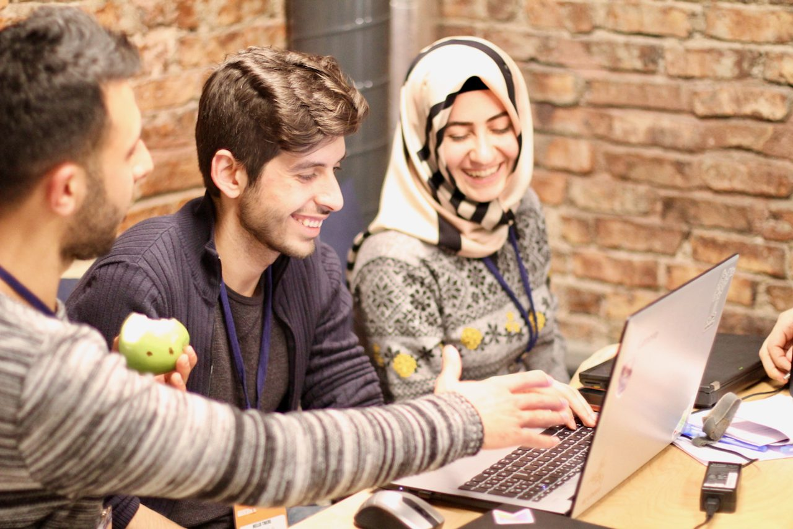
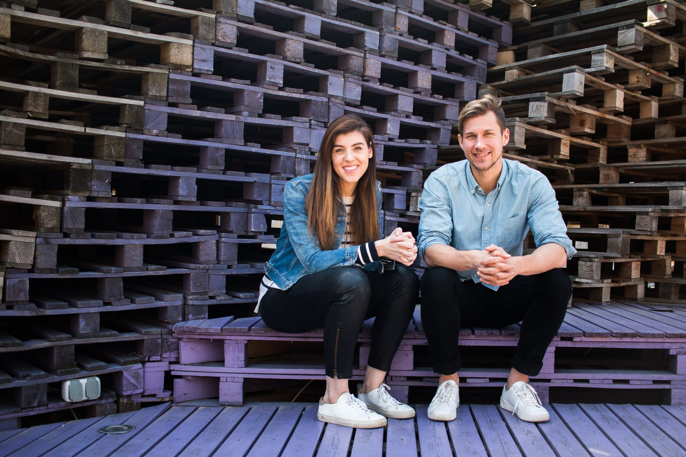

“Qualified” is a choice institutions make
We redesign who gets counted as ready, so that ability matters more than paperwork, postcodes or passports.
About us
Re:Coded is a non-profit founded in 2016. We train underserved talent in more than 145 countries in AI fluency, digital skills and the judgement no tool replaces.

We began by training young people in conflict-affected communities to become software developers. Then AI erased the entry-level jobs those bootcamps led to. So we started again, with programs built for the work that’s left: judgement, AI fluency and the resilience to keep adapting.
We started where opportunity was hardest to reach: Iraq, Lebanon, Yemen, and refugee communities in Turkey and Jordan. Online programs now bring in learners from across the world, while MENA stays at the heart of what we do.
Our story

Young people in conflict-affected communities needed jobs. The tech industry needed developers. We set out to build the bridge.
A high quality education to employment model with an 87% job placement rate, and graduates working in Fortune 500 companies across the globe.
As AI reshaped entry-level tech work, we asked whether we were still solving the right problem, and wound down the bootcamps.
New programs built for the AI era: AI fluency, the human capabilities no model can replicate, and the resilience to keep adapting.
What we believe
We redesign who gets counted as ready, so that ability matters more than paperwork, postcodes or passports.
Tools change every year. We teach how they work, where they fail, and how to think clearly alongside them.
Not a certificate. Work that pays, lasts and is chosen, and the resilience to keep adapting when it changes.
Our team
Re:Coded is led by its two co-founders, working alongside partners, instructors and mentors on every program.

Co-founder & CEO
A lawyer by training, Alexandra launched NYU’s first humanitarian innovation accelerator and worked with the UN and Human Rights Watch before co-founding Re:Coded. She holds degrees from NYU and the Australian National University.
LinkedInCo-founder & COO
Marcello led the design and scaling of Re:Coded’s technology and entrepreneurship programs. He previously worked with the Government of Canada, UNDP, UNICEF, Save the Children and UN Women, and holds degrees from Columbia and PUC-Rio.
LinkedInFund a cohort, hire our graduates, or design a program together.